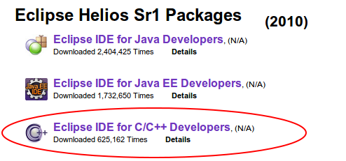
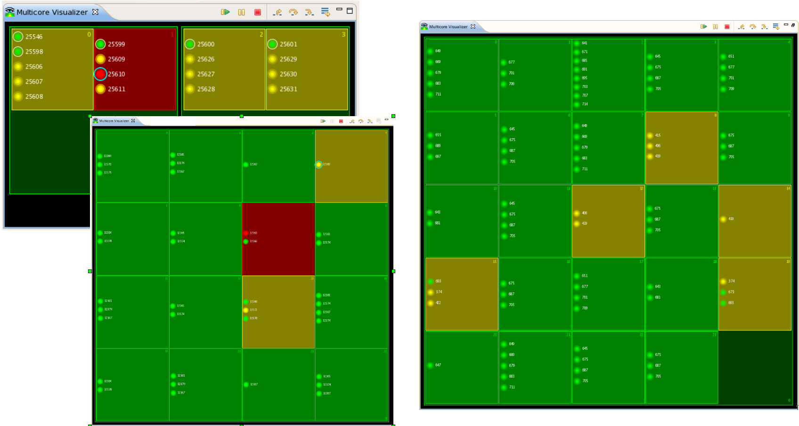

This is not your
father's CDT
But it could be yours...
Marc Khouzam (Ericsson) and Doug Schaefer (QNX/BlackBerry)
Agenda
- Introductions
- Editor
- Parser/Indexer
- Refactoring
- Code Analysis
- Scanner Discovery
- Project/Build
- Debug
- Unit Testing
- Qt
- Future Plans
Introductions
What is CDT?
C/C++ Development Tooling
Tools for building applications in C/C++ using Eclipse
Platform for C/C++ IDEs
The community
!Picture of CDT project page!
CDT in action
Eclipse C++ IDE Package
Commercial IDEs
In house IDEs
By the Numbers
Number 3 Package with downloads increasing yearly
And about to break the million mark!

CDT in Eclipse
Mylyn Bridge
Linux Tools Project
Parallel Tools Project
Code Analysis - Codan
Debug
Project-less Debugging
Pretty-Printing of Data Structures

Reverse Debugging
Step or Resume forwards AND backwards
Go back in time, change data and re-write history
Use breakpoints to enable/disable recording
Reverse Debugging
Multi-Process Debugging

Enhanced Expressions and Groups
Grouping expressions
Pattern matching expressions
Sorting expressions
Enhanced Expressions and Groups

OS Resources view
Sometimes examining OS Resources can help solve bugs.

All Processes
All Threads
Semaphores
Sockets
Kernel Modules
File Descriptors
Message queues
Shared Memory Segments
Multicore Visualizer
Multicore Visualizer CPU Load Meters

Multicore Visualizer Filtering


Focus on interesting parts
Allow for more information to be displayed
Dynamic-Printf
No re-compiling
No re-deploying
No need to keep debugger connected
Step Into Selection
void compute(int a, float b) {
MyInt three = new MyInt(3);
MyFloat floatArg = new MyFloat(b);
substract(multiply(new MyInt(a), floatArg), three);
} Step-into:
MyInt(int value) {
fValue = value;
} Return and Step-into again:
MyFloat multiply(MyInt arg1, MyFloat arg2) {
return arg1 * arg2;
} Return and Step-into yet again to finally get to:
MyFloat substract(MyFloat arg1, MyInt arg2) {
return arg1 - arg2;
} Five stepping operations!
Step Into Selection
void compute(int a, float b) {
MyInt three = new MyInt(3);
MyFloat floatArg = new MyFloat(b);
substract(multiply(new MyInt(a), floatArg), three);
} Single Step-into selection:
MyFloat substract(MyFloat arg1, MyInt arg2) {
return arg1 - arg2;
}